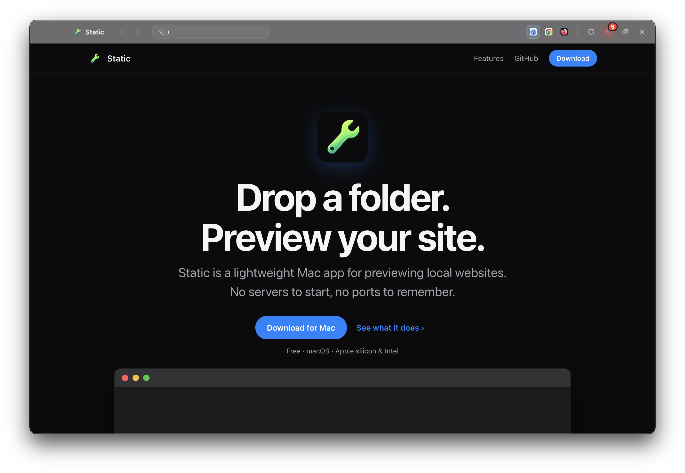
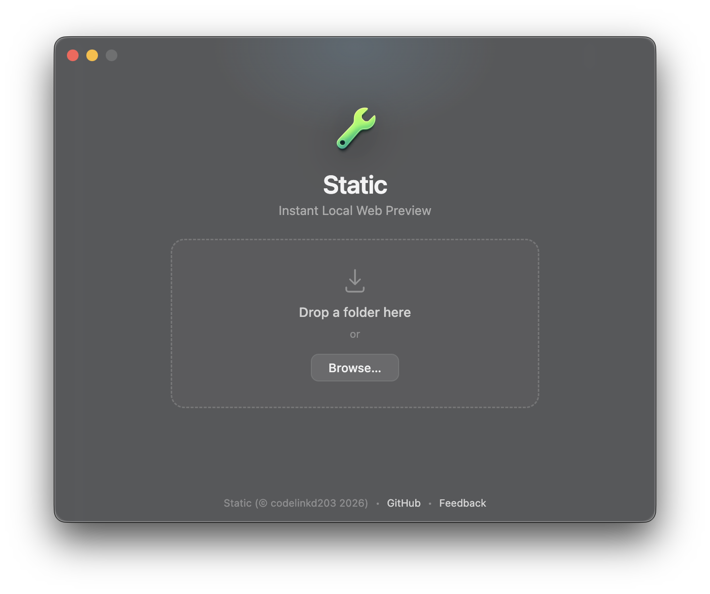
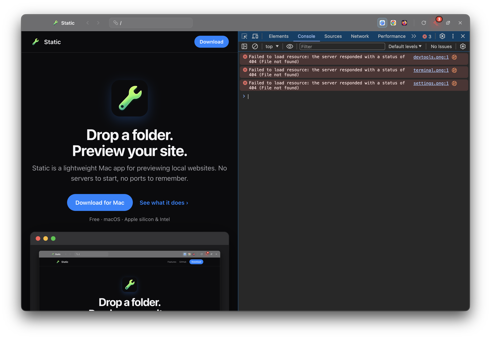
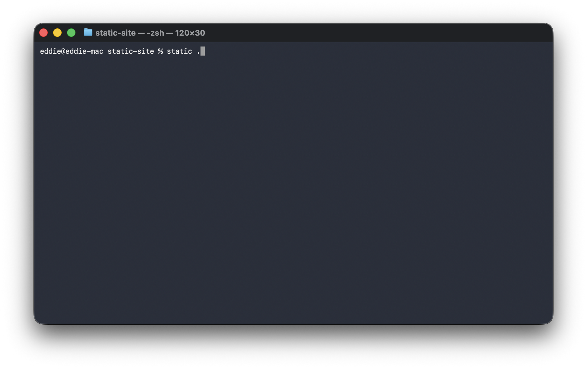
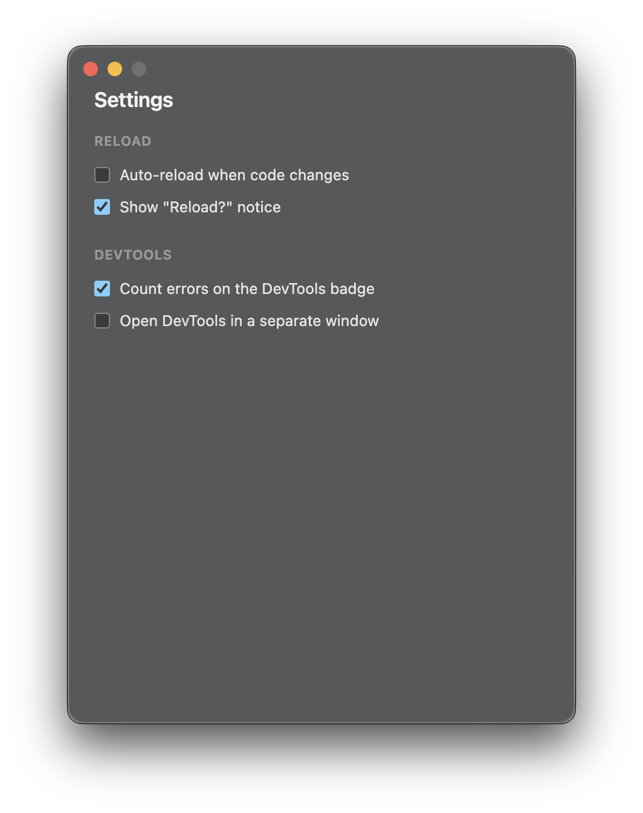

Drop a folder.
Preview your site.
Static is a lightweight Mac app for previewing local websites. No servers to start, no ports to remember.
Free · macOS · Apple silicon & Intel

Local previews, minus the setup.
Everything lives in one clean, Quick Look-style window.
Just drop it in.
Drag any website folder onto Static, or hit Browse. Your site opens instantly, with no config files and no project setup.

DevTools when you need them.
Inspect and debug right from the toolbar. A live error counter tells you when something breaks, and reload is one click away.

Made for the terminal, too.
Run static . in any folder to open it straight away, or static ~/Projects/my-site from anywhere.

Your browser, your choice.
Static detects the browsers installed on your Mac and adds one-click shortcuts to open your project in any of them. Auto-reload and notices are in Settings.

Ready when you are.
Grab Static and preview your first folder in seconds.
Download for Mac